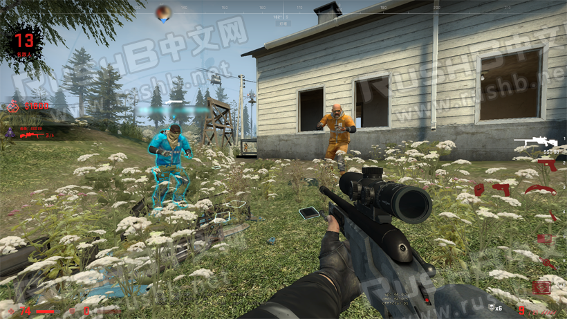

CSGO RushB中文网
CSGO RushB中文网
本周第四周裂网大行动的“在 头号特训 中，获得 SSG-08 5 次击杀。”任务相信让不少玩家犯难，毕竟这模式大部分玩家基本不玩，而且游戏过程中鸟狙基本都要中后期才能买到。如果你实在做不了又想完成拿钻石币的话，可以通过以下方法来刷任务，要注意，不要影响其他正常游戏玩家。

刷任务总共需要4名玩家，要求能连上同一服务器，比如每人单人玩国际服匹配都是连GANG服，这样4人大概率能排在一起，另外建议使用YY等其他语音工具交流。
4人准备完成后，按头号特训段位分成2队，然后同时开始匹配，如果4人同时出现接受按钮，那样基本就是在同一服务器，进入地图后，可查看右上角的击杀提示人名是否一致，如果不是的话，退出来重新匹配。
确认四人在同一服务器的话，游戏开始统一降落在同一位置，建议选择地图边缘，比如神秘小镇左上角的灯塔，一般不会有人来打扰，然后开局奖励选择探索奖励，落地后不久就能+300块。
四人落地后，集中到一起，跑步途中顺带捡些钱，集合后，选定一人负责买鸟狙，然后各击倒两队其中一人，由负责买鸟狙的玩家捡钱，然后等待两队队友复活，重复几次，这样很快就能凑出3250买鸟狙。买了鸟狙后，同样是只击杀队伍其中一人，然后等待复活，接着击杀，这样5杀很快就能刷完。
其他方面：
- 注意毒圈位置。
- 不要被炸死，比如地图中的爆炸桶，被炸死后无法复活。
- 复活次数越多冷却时间会更长，直到无法复活，如果一局完成不了的话，再刷一局即可。
- SSG-08子弹可能不够，买弹药补充即可。
- 不要影响到其他正常游戏玩家。